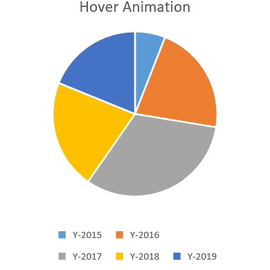
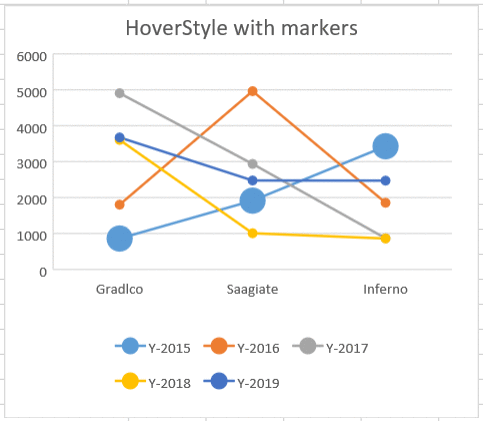

Usually, when a lot of data is plotted in a chart, data labels clutter the entire chart and make the view meaningless. SpreadJS provides support for adding hover animations and hover styles to enhance the user experience while interacting with charts.
While working with SpreadJS, adding hover animation allows users to interact with the data points in the chart. This feature helps users to explore data and turn a basic chart into a responsive chart. Moreover, it enhances the readability of charts while making the spreadsheet more appealing for users.
Hover animations are useful especially when:
The following screenshot depicts a chart with hover animations. Users can use the mouse hover animation effect in the worksheet by simply moving the mouse pointer over the chart.

The useAnimation() method can be used to add hover animation to charts. All chart types support hover animation except the StockHLC chart. After applying hover animation effect, the data points in the chart enlarge and additional details about the plotted data points are displayed.
While working with SpreadJS, users can apply hover styles to charts by using the hoverStyle() method. This feature allows users to highlight different data points in the chart. Moreover, it helps analysts to customize the appearance of the data that dynamically gets displayed when a user hovers over the data points in the chart.
All chart types support hover styles. Users can modify the color, transparency, line width, line color, line transparency, line type, symbol color, symbol transparency, symbol line width, symbol line color, symbol line transparency and symbol line type while applying hover styles to the charts.
Note: The priority of hover style is higher than the style set for the data points.
The following screenshot depicts hover styles applied to a chart.

Refer to the following example code to add hover animations and hover styles to charts while visualizing data in spreadsheets.
| JavaScript |
Copy Code
|
|---|---|
<script type="text/javascript"> var chart_columnClustered, chart_columnStacked, chart_columnStacked100, sheet; window.onload = function () { var spread = new GC.Spread.Sheets.Workbook(document.getElementById("ss")); activeSheet = spread.getActiveSheet(); activeSheet.suspendPaint(); // Prepare data for the chart activeSheet.setValue(0, 1, "Y-2015"); activeSheet.setValue(0, 2, "Y-2016"); activeSheet.setValue(0, 3, "Y-2017"); activeSheet.setValue(0, 4, "Y-2018"); activeSheet.setValue(0, 5, "Y-2019"); activeSheet.setValue(1, 0, "Gradlco"); activeSheet.setValue(2, 0, "Saagiate"); activeSheet.setValue(3, 0, "Inferno"); activeSheet.setColumnWidth(0, 120); for (var r = 1; r <= 3; r++) { for (var c = 1; c <= 5; c++) { activeSheet.setValue(r, c, parseInt(Math.random() * 5000)); } } // Configure Line Marker chart with HoverStyle var lineMarkerChart = activeSheet.charts.add('lineMarkerChart', GC.Spread.Sheets.Charts.ChartType.lineMarkers, 20, 100, 380, 330, "A1:F4", GC.Spread.Sheets.Charts.RowCol.columns); lineMarkerChart.title({ text: "HoverStyle with markers" }); var seriesItem = lineMarkerChart.series().get(0); seriesItem.symbol.size = 20; lineMarkerChart.series().set(0, seriesItem); var hoverStyle = lineMarkerChart.hoverStyle(); // Set applyHoverStyle to true hoverStyle.applyHoverStyle = true; hoverStyle.color = "orange"; hoverStyle.transparency = 0.1; hoverStyle.borderStyle.transparency = 0.1; hoverStyle.borderStyle.color = '#FF0000'; hoverStyle.borderStyle.width = 3; hoverStyle.borderStyle.dashStyle = GC.Spread.Sheets.Charts.LineType.lgDash; hoverStyle.symbolStyle.color = "yellow"; hoverStyle.symbolStyle.transparency = 0.1; hoverStyle.symbolStyle.borderStyle.transparency = 0.1; hoverStyle.symbolStyle.borderStyle.color = 'rgb(0, 0, 255)'; hoverStyle.symbolStyle.borderStyle.width = 9; hoverStyle.symbolStyle.borderStyle.dashStyle = GC.Spread.Sheets.Charts.LineType.lgDash; lineMarkerChart.hoverStyle(hoverStyle); // Configure Pie chart with Hover Animation var pieChart = activeSheet.charts.add('pieChart', GC.Spread.Sheets.Charts.ChartType.pie, 420, 100, 380, 330, 'A1:F4'); pieChart.title({ text: "HoverStyle with Animation" }); pieChart.useAnimation(true); var hoverStyle1 = pieChart.hoverStyle(); // Set applyHoverStyle to true hoverStyle1.applyHoverStyle = true; hoverStyle1.color = "orange"; hoverStyle1.transparency = 0.6; hoverStyle1.borderStyle.transparency = 0.1; hoverStyle1.borderStyle.color = '#FF0000'; hoverStyle1.borderStyle.width = 9; hoverStyle1.borderStyle.dashStyle = GC.Spread.Sheets.Charts.LineType.lgDash; pieChart.hoverStyle(hoverStyle1); activeSheet.resumePaint(); }; </script> |
|